아스타나키즈 입장 데스크
직원 메뉴얼 · ver.1.35 기준
네이버 예약 입장 · 현장 결제(POS) · 열쇠 관리 · 아마노 주차등록을
POS PC 한 화면에서 처리합니다
차례
1. 화면 한눈에 보기 · 2. 아침 준비 · 3. 네이버 예약자 입장 · 4. 연속예약
5. 현장입장(POS 결제) · 6. 열쇠 반납과 초과요금 · 7. 주차등록
8. 이용완료 횟수와 사은권 · 9. 입장권 출력(프린터) · 10. 반납안내 커튼 · 11. 문제가 생겼을 때
1. 화면 한눈에 보기
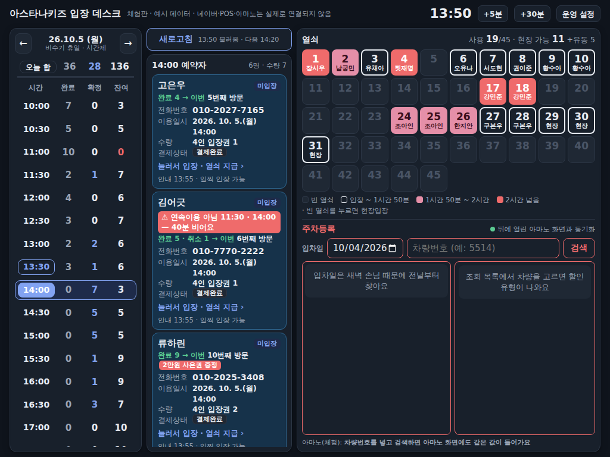
| 왼쪽 · 시간표 | 날짜(← →), 오늘 합, 시간별 완료 · 확정 · 잔여. 완료 = 회색, 확정 = 파랑(0이면 흰색), 잔여 = 흰색(0이면 빨강).
잔여 = 네이버 판매 수량 − 확정 − 완료. 시간 줄을 누르면 그 시간만 네이버에서 다시 불러옵니다. |
|---|
| 가운데 · 예약자 명단 | 고른 시간의 예약자 카드. 미입장 카드가 위에 이름 가나다순, 입장을 처리하면 그 카드는 밑으로 내려가 입장완료 카드끼리 다시 가나다순. 하늘색 = 미입장, 회색 = 입장완료(이용완료). 위의 [새로고침] = 하루 전체를 네이버에서 다시 불러옴. |
|---|
| 오른쪽 위 · 열쇠판 | 1~45번. 빈 열쇠(흐림) · 이용 중(검정 테두리) · 1시간 50분 ~ 2시간(분홍) · 반납 시간 지남(빨강). 색 설명은 45번 오른쪽 빈 칸에 있습니다. 열쇠판 아래 오른쪽 [열쇠 일괄 반납처리](열쇠 2개 이상 나가면 켜짐) = 영업 마감 때 모든 열쇠를 한 번에 반납(6장). |
|---|
| 열쇠판 아래 왼쪽 · 상담 | [키즈상담] [카페상담] = 네이버 톡톡 상담. 손님이 새로 보낸 메시지가 있으면 버튼에 붉은 원 + 숫자(상담 목록 줄의 붉은 원을 더한 안 읽은 말풍선 수 · 줄 시각이 '방금'이어도 셈). 누르면 그 톡톡 상담 창이 크게 열리고, 상담을 마친 뒤 창의 X를 누르면 데스크로 돌아옵니다. 읽은 만큼 숫자가 줄고, 다 읽으면 숫자가 없어집니다 (20초마다 확인). 주황 ! = 숫자를 못 읽는 중(네이버 로그인 풀림 등, 버튼에 마우스를 올리면 까닭) → 2장 '처음 한 번만'. |
|---|
| 오른쪽 아래 · 주차등록 | 뒤에 열린 아마노 화면과 같은 값이 들어갑니다 (아마노 화면을 직접 만질 필요 없음). 맨 아래 줄 = 아마노 진행 상황 · 실패 알림. |
|---|
| 맨 위 | 왼쪽 통합 데스크 ver.n (버전 숫자가 바뀌면 새 설치본) · [포스 전환] = 결제와 상관없이 OKPOS 화면으로 (POS를 작업표시줄로 최소화하면 데스크로 돌아옴) · [환전 오픈] = POS와 연결된 현금통을 엶 (POS가 꺼져 있어도, 영수증 프린터를 통해 · 운영 설정 → 프린터의 현금통 단자를 열리는 쪽(2번/5번)으로 두면 더 빠름) · 가운데 초록 반납안내 커튼 손잡이(10장) · [오늘 입장권 총 판매수 = n장] (고른 날의 네이버 이용완료 + 현장구매 장수. 누르면 입장권 목록: 열쇠를 가져간 순서(최근 입장이 맨 위) · 이름(현장은 현장구매자) · 열쇠 번호(반납해도 남음, 일괄 = 일괄 반납으로 돌려받은 열쇠) · 입장시간 · 장수 · [기록 삭제] = 시험으로 잡힌 손님을 판매수 · 통계에서 뺌, 네이버 기록은 그대로 · 되살리기 가능. ◀ ▶ = 2주 전까지 날짜 이동, 열쇠 번호로 찾기 = 최근 2주 그 열쇠를 가져간 사람, 줄을 누르면 고객 카드(전화번호) → 6장) · 지금 시각 · 운영 설정. |
|---|
네이버 예약은 09:50부터 매시 20분 · 50분에 자동으로 불러옵니다(19:20까지). 그 사이에 들어온 예약(예: 09:58에 10:00 예약)은 [새로고침] 또는 그 시간 줄을 누르면 바로 나옵니다.
2. 아침 준비
- POS PC를 켜고 OKPOS를 평소처럼 켭니다.
- 바탕화면의 아스타나키즈 입장 데스크를 켭니다. 뒤에 아마노 · 네이버 창이 함께 열리고, 맨 앞에 입장 데스크가 뜹니다.
- 아마노는 저장된 아이디로 자동 로그인합니다.
- 네이버는 로그인이 유지됩니다. 풀렸으면 새로고침 버튼 옆에 빨간 글로 "네이버에 로그인해 주세요"가 뜹니다 → 10장 참고.
- 새로고침 옆에 "○○:○○ 불러옴"이 보이면 준비 끝입니다.
아마노 · 네이버 창은 닫히지 않습니다(X를 누르면 데스크 뒤로 돌아감). 프로그램을 끌 때는 입장 데스크 창을 닫으면 모두 꺼집니다.
처음 한 번만 (관리자)
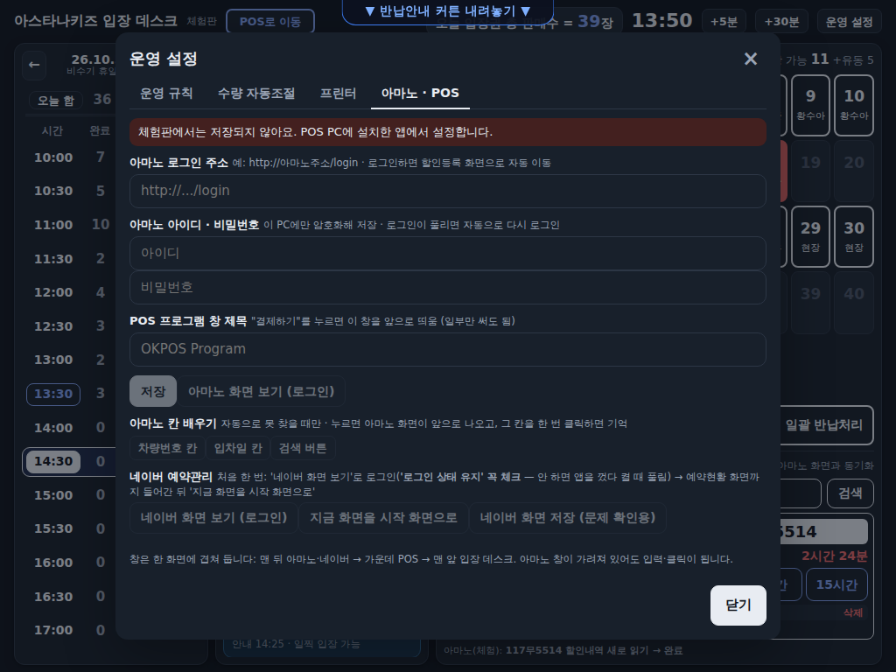
- 운영 설정 → 아마노 · POS: 아마노 로그인 주소 · 아이디 · 비밀번호(이 PC에만 암호화 저장) · POS 창 제목(OKPOS Program).
- 네이버 화면 보기 (로그인) → 네이버 로그인('로그인 상태 유지' 꼭 체크) → 예약 → 예약현황 · 일간 화면 → 지금 화면을 시작 화면으로.
- 네이버 톡톡 상담 (같은 칸 아래): 키즈상담 줄의 톡톡 화면 보기 → (로그인이 필요하면 예약과 같은 네이버 아이디로) 아스타나키즈 계정의 상담관리 목록 화면까지 → 창의 X → 지금 화면을 키즈상담으로. 카페상담 줄도 같은 방법으로 카페아스타나 계정. 주소는 이 PC에만 저장됩니다.
- 왼쪽 메뉴의 '상담관리 111' 같은 숫자는 상담완료를 안 눌러 쌓인 수라 쓰지 않습니다. 버튼 숫자는 상담 목록 줄마다 붙는 붉은 원만 더한 것입니다.
3. 네이버 예약자 입장
- 왼쪽 시간표에서 손님의 예약 시간을 누릅니다 → 가운데에 예약자 카드.
- 손님 이름을 찾아 카드를 누릅니다.
- 열쇠판에서 예약 수량만큼 열쇠 번호를 누릅니다 (흐린 번호는 이미 지급된 열쇠).
- [등록 완료] → 기다리지 않고 바로 열쇠가 등록되고 입장권이 출력됩니다. 네이버 이용완료는 뒤에서 자동으로 눌립니다 (카드에 "네이버 이용완료 처리 중…").
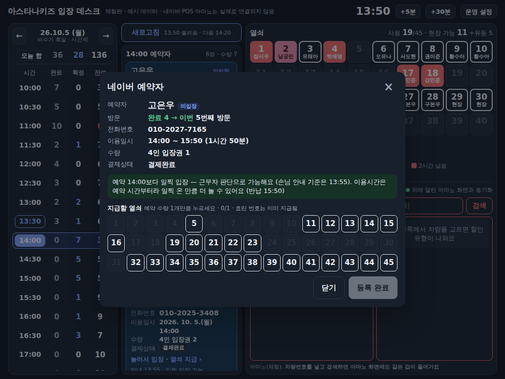
- 손님 안내는 예약 5분 전 입장입니다. 하지만 예약 당일이면 근무자 판단으로 더 일찍 들여보낼 수 있습니다 (예: 내부가 비었을 때 "오늘은 예약이 적어 일찍 들어가 더 놀고 가세요"). 이용시간은 예약 시간부터 셉니다.
- 다른 날 예약은 입장 처리가 되지 않습니다.
- 뒤에서 네이버 이용완료가 안 되면 새로고침 옆에 빨간 글 "⚠ 네이버 이용완료 실패 n건: 이름 시간"이 남고, 카드에 "네이버 이용완료 대기 — 까닭"이 뜹니다. 2분마다 자동으로 다시 하고, 계속 안 되면 네이버 화면에서 그 손님을 직접 이용완료합니다.
- 예약했다 취소만 하고 이용완료가 한 번도 없는 손님(네이버 카드에 '취소 n'만 있음)도 신규(완료 0 → 1번 완료 예정)로 바로 나옵니다.
- 네이버 카드에서 방문 횟수를 못 읽은 손님은 입장권이 몇 초 늦게 나옵니다 (뒤에서 이용완료하며 '완료 n'을 읽은 뒤 출력).
대리예약 · 입금대기
- 대리예약: 다른 사람이 대신 예약한 경우 카드에 대리예약 스티커와 함께 예약자 정보 밑에 방문자(실제 오는 손님 이름 · 전화번호)가 나옵니다.
- 입금대기(주황 스티커): 네이버에서 결제를 안 한 예약입니다. 네이버를 불러올 때마다(30분마다) 지금 ~ 2시간 안 타임에 입금대기 예약이 있으면 데스크가 자동으로 [예약취소]합니다. 결제한 예약은 누르지 않습니다(취소 직전에 다시 확인). 운영 설정 → 운영 규칙에서 끄고 켜고, 취소 기록을 볼 수 있어요.
- 예약 수량이 2장 이상이면 카드의 수량 숫자가 빨강입니다 (열쇠를 여러 개 줘야 함).
예약시간 변경 (데스크에서만)
- 네이버 예약 시간은 데스크에서 바꿀 수 없습니다. 대신 손님 카드를 다른 시간으로 옮길 수 있어요 (예: 13:30 예약 손님이 14:30에 온다고 연락).
- 카드를 눌러 예약자 창 → 이용일시 옆 ◀ 시간 ▶로 고르고 [변경] → 카드가 그 시간 명단으로 갑니다. 카드에 주황 네이버 13:30(원래 시간) 표시가 붙어요.
- 옮긴 카드는 새로고침해도 · 프로그램을 다시 켜도 옮긴 시간에 있습니다. 이용시간 · 반납 시각은 옮긴 시간부터 셉니다.
- 입장(등록 완료)하면 네이버 이용완료는 네이버의 원래 시간 칸에서 눌립니다. 되돌리려면 원래 시간으로 골라 [변경].
- 같은 손님이 같은 시간에 나눠 한 예약은 같이 옮겨집니다.
4. 연속예약
같은 손님(이름 + 전화번호)이 2시간 이내 간격으로 이어서 예약하면 퇴장 없이 이어서 쓰는 손님입니다.
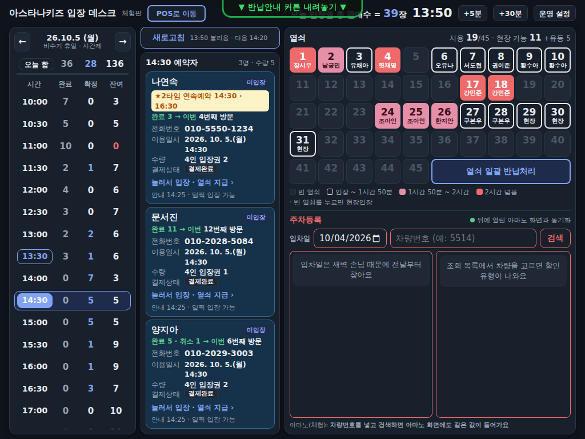
| 카드 표시 | 뜻 · 할 일 |
|---|
| ★2타임 연속예약 (노랑, 첫 예약) | 연속 이용자 — 신발장 관리. 첫 예약 카드에서만 입장 처리하면 뒤 예약도 모두 이용완료됩니다. |
| 연속예약 2/2 · 첫 예약 14:30 (회색) | 뒤 예약. 따로 입장 처리하지 않습니다. |
| ⚠ 연속이용 아님 (빨강) | 2시간보다 긴 간격(예: 11:30 · 14:00). 이어서 쓰지 않습니다 — 예약마다 1시간 50분, 끝나면 나갔다가 다음 예약 시간에 다시 입장하도록 안내. |
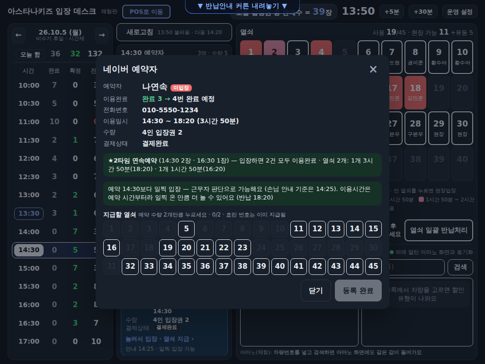
- 끝나는 시각 = 마지막 예약 시간 + 1시간 50분 (2시간 간격이면 2타임 3시간 50분, 3타임 5시간 50분).
- 열쇠는 첫 예약 수량만큼, 열쇠마다 끝나는 시각이 따로 정해집니다. 예: 12:00 3장 + 14:00 2장 → 열쇠 2개 15:50, 1개 13:50.
- 뒤 시간에 사람이 늘어나는 예약은 묶음에서 빠집니다 → 그 예약 카드에서 따로 입장 처리.
이용 중에 손님이 뒤 타임을 또 예약하면 (추가 예약)
네이버를 불러올 때마다(매시 20 · 50분 · 새로고침) 열쇠를 가진 손님과 같은 사람(이름 + 전화번호)의 뒤 타임 예약을 찾아 그 손님 열쇠 창 오른쪽에 빨간 알림을 띄웁니다. 지금 열쇠 정보와 같이 보고 결정하세요.
| 예약 간격 (지금 마지막 타임에서) | 데스크가 하는 일 · 근무자가 고를 것 |
|---|
| 딱 2시간 뒤 | 열쇠 반납 시각을 자동 연장(그 예약 + 1시간 50분) → [확인] 하면 그 예약 네이버 이용완료 |
| 2시간보다 가까움 (30분 ~ 1시간 30분) | 이 예약 시간부터 1시간 50분 또는 처음부터 이어서 3시간 50분 중 고르고 [확인] → 이용완료 |
| 2시간 30분 이상 떨어짐 | 당겨서 이어서(3시간 50분) + 이용완료 또는 그대로 두기(이용완료 안 함 · 그 시간에 따로 입장) |
- 예약 인원이 지금 열쇠보다 많으면 빨간 글로 알려 줍니다 → 늘어난 인원은 열쇠를 더 드리세요.
5. 현장입장 (POS 결제)
열쇠판에서 빈 열쇠를 누르면 현장입장 창이 뜹니다. 왼쪽 = 할 일 안내(지금 할 단계가 파랗게), 오른쪽 = 위에서 아래로 차례대로 누르면 됩니다.
- ① 판매 가능한지: 맨 위 색 — 초록 = 판매 가능(현장 판매 가능 수), 빨강 = 지금은 판매 불가(예약 손님 자리). 유동 열쇠를 쓰는 때는 빈 좌석을 보고 [빈 좌석 확인했어요].
- ② [POS로 이동해서 결제하기]: 입장권 매수별 인원을 안내하고 필요한 만큼 POS에서 결제 → POS를 최소화하면 이 창으로 돌아옵니다.
- ③ 입장권 수(− +)를 결제한 만큼 맞춥니다 (열쇠가 다음 빈 번호로 이어서 붙음). 입장 타임은 바로 앞 30분 칸이 기본(예: 10:12 → 10:00) — 앞뒤로 바꿀 땐 ◀ ▶.
- ④ 전화번호: 열쇠를 드리기 전에 받습니다 (열쇠 미반납 때 연락). 010은 미리 들어가 있고 뒤 8자리를 키패드로.
- ⑤ [결제 완료 · 열쇠 등록] → 입장권이 나오면 열쇠와 함께 드립니다.
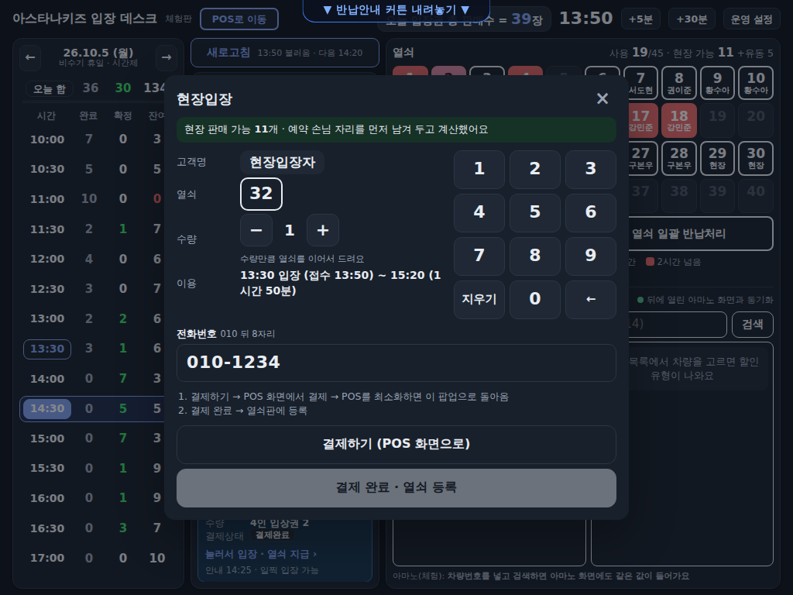
현장 판매 가능 수가 기본 40개를 넘으면 유동 열쇠(5개)를 쓸지 물어봅니다 — 빈 좌석을 보고 정해 주세요.
"POS가 최소화돼 있는데 펼치지 못했어요"가 뜨면 작업표시줄의 OKPOS 아이콘을 직접 눌러 결제하고, 끝나면 입장 데스크 아이콘을 누르세요.
6. 열쇠 반납과 초과요금
열쇠판에서 손님 열쇠를 누르면 이용 시간 · 반납 시각이 보입니다.
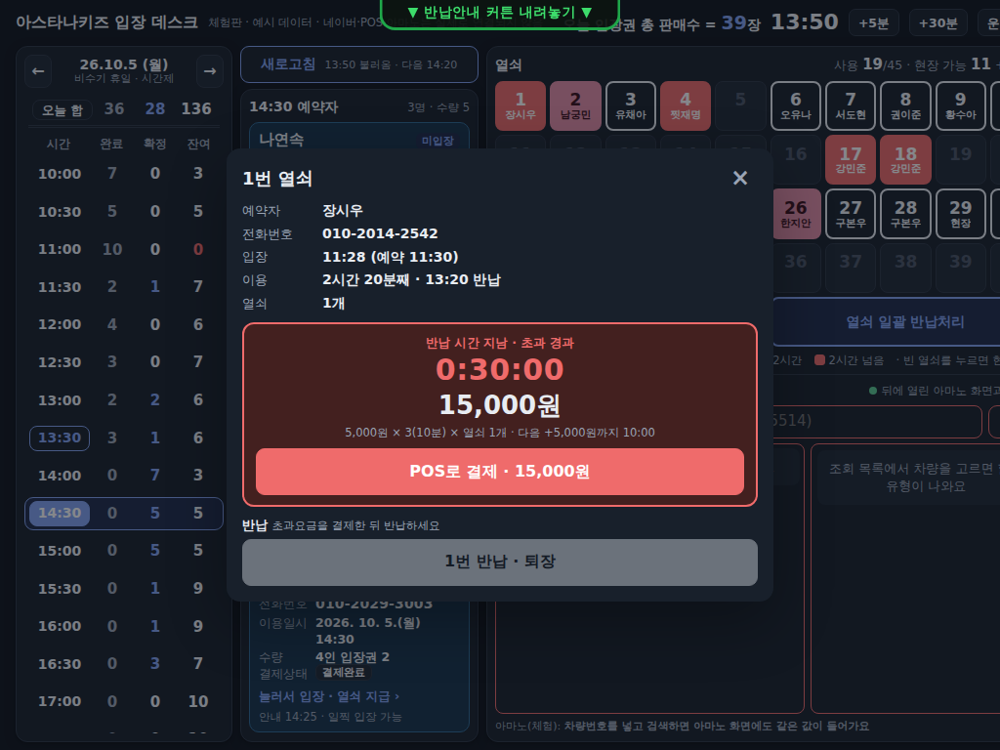
- 1시간 50분까지 페널티 없음. 1:50:01부터 시간을 세고, 2:00:00 정각에 5,000원, 그 뒤 10분이 꽉 찰 때마다 5,000원 × 열쇠 수.
- 초과요금이 있으면 [POS로 결제] → POS에서 결제 → 돌아오면 금액이 고정되고 반납할 수 있습니다. 초과요금 영수증은 POS 영수증을 드립니다.
- 열쇠가 여러 개면 [17번만]처럼 하나씩, 또는 [모두 반납].
- 무제한인 날 · 시간(비수기 평일, 18:00 입장부터)은 초과요금이 없습니다.
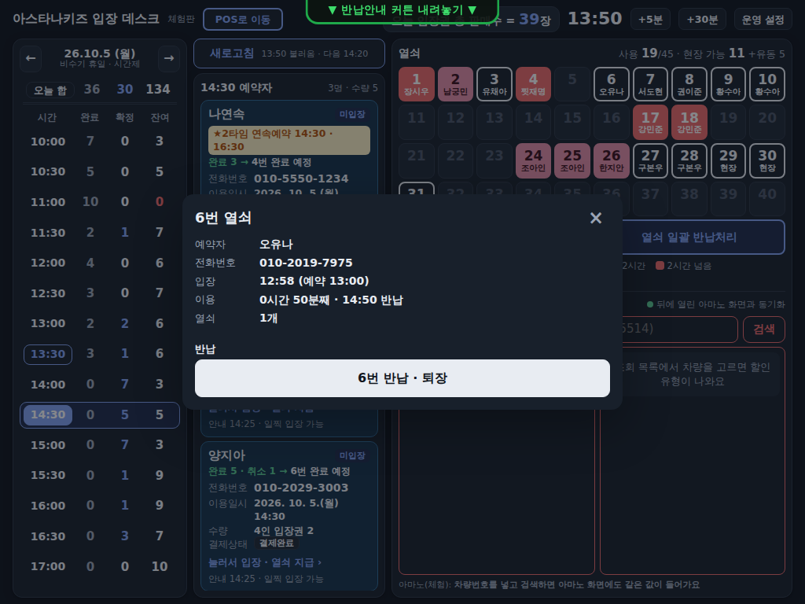
열쇠 일괄 반납처리 (영업 마감)
- 열쇠판 아래 오른쪽 [열쇠 일괄 반납처리]를 누릅니다 (열쇠가 2개 이상 나가 있을 때만 켜짐, 평소엔 흐림).
- 열쇠를 가진 손님 목록과 열쇠 번호가 나옵니다. 초과요금이 남은 손님이 있으면 빨간 칸에 이름 · 금액이 나옵니다 → 결제했는지 꼭 확인하세요.
- [모두 반납 (n명 · n개)] → 모든 열쇠가 빈 열쇠로 돌아가고 손님은 퇴장 처리됩니다.
모든 키 반납 확인 후 한번에 종료 처리 하세요 (버튼 옆 경고). 열쇠가 실제로 다 돌아왔는지 보지 않고 누르면, 손님이 가져간 열쇠를 마지막에 누가 썼는지 알기 어렵습니다. 손님이 적은 날은 반납된 앞번호 열쇠를 계속 돌려 쓰니 더 조심하세요.
반납 시각 바꾸기 · +1타임 (열쇠 창)
- 열쇠를 누르면 나오는 창의 이용 … 반납 밑 → ◀ 시간 ▶ [변경]: 반납 시각만 10분씩 바꿉니다 (판매수 · 인원 그대로).
- [+1타임]: 손님이 입장권을 더 사서 이어 놀 때 (현장 손님이 다시 사거나 네이버로 이어 예약했는데 알림이 안 뜬 경우 등). 반납이 다음 타임 1시간 50분까지(+2시간) 늘고, 입장권을 열쇠 수만큼 더 판 것으로 판매수에 들어갑니다. 결제는 POS에서.
골든벨 (오후 · 손님이 적을 때)
- 1시간 50분 제한이 있는 날 16:00 이후 안에 있는 열쇠가 20개 이하가 되면 데스크에 골든벨 알림창이 뜹니다: "골든벨 울려주세요~!! 지금 시간부터 모든 고객 시간제한 없는 무제한 이용임을 알려주세요~~!!" → 골든벨을 울리고 안내한 뒤 [확인].
- 그때부터 그날은 모든 손님 무제한입니다 (지금 열쇠와 앞으로 들어오는 손님 모두). 열쇠 색(분홍 · 빨강) · 초과요금이 없어지고, 날짜 밑에 '골든벨 무제한 16:02~'가 보입니다.
없는 열쇠 찾기 (다음날 아침 등)
- 맨 위 [오늘 입장권 총 판매수] → 입장권 목록 → 열쇠 번호로 찾기에서 없는 열쇠 번호를 고릅니다.
- 최근 2주 동안 그 열쇠를 가져간 사람이 최근 순으로 나옵니다. 맨 위가 마지막으로 쓴 사람입니다 (일괄 표시 = 일괄 반납으로 돌려받아 실제 반납을 확인하지 않은 열쇠).
- 줄을 누르면 고객 카드: 전화번호 · 날짜 · 입장 · 열쇠 · 반납 시각 · 예약번호(현장구매는 POS 번호) → 연락합니다. 현장구매자도 전화번호가 남습니다.
- 입장 기록은 이 PC에 날짜별로 남아 지우지 않습니다. 목록에서는 오늘 포함 2주(◀ ▶)까지 봅니다.
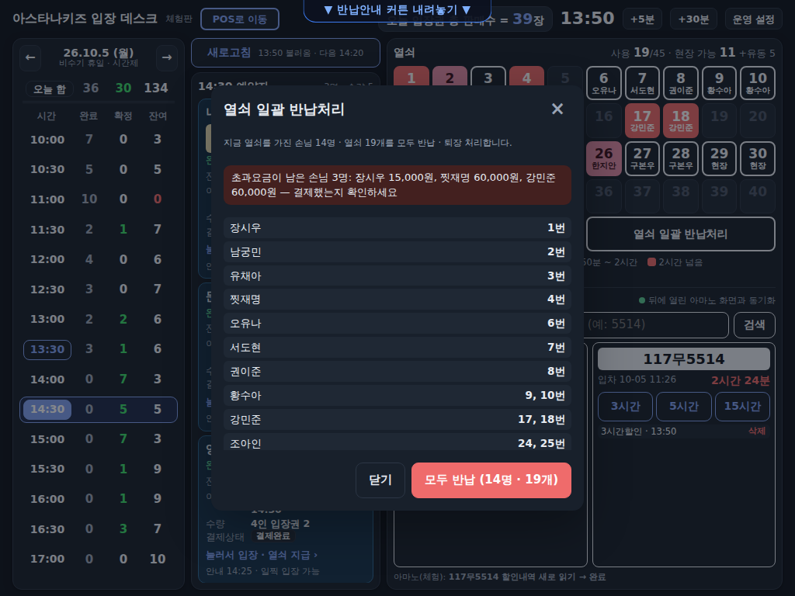
7. 주차등록 (아마노)
- 입차일은 기본 전날입니다 (새벽에 들어온 차 때문). 차량번호 칸을 누르면 그 위에 숫자패드가 뜹니다 (아래 할인정보는 가리지 않음) → 뒤 4자리 등을 누르고 패드의 [검색] (← 한 자리 지우기 · 지우기 전부). 다른 곳을 누르면 패드가 닫힙니다.
- 왼쪽 목록에서 차를 고르면 오른쪽에 입차 시각 · 주차 시간 · 할인 버튼이 나옵니다.
- [3시간] [5시간] [15시간] 중 하나 → 할인내역에 바로 "3시간할인 · 등록 중…"이 뜨고 차량번호 칸이 비워집니다. 기다리지 말고 다음 차를 바로 검색하세요 (숫자패드가 바로 다시 뜸).
- 아마노 등록은 뒤에서 차례대로 합니다 ("등록되었습니다" 확인도 자동). 끝나면 아래에 "117무5514 3시간할인 등록됨"이 잠깐 뜨고 할인내역이 시각으로 바뀝니다.
- 잘못 넣었으면 할인내역의 [삭제] (우리 계정으로 넣은 것만 지울 수 있음).
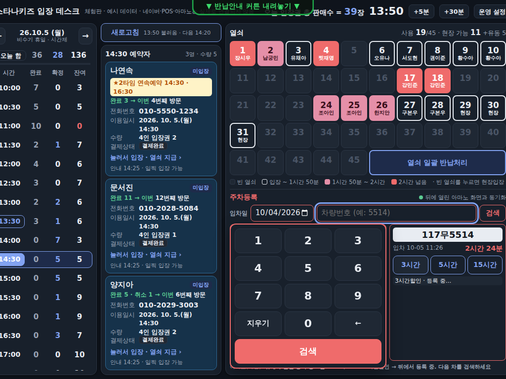
- 검색 · 차 고르기는 아마노 화면이 바뀔 때까지 기다렸다 읽어서 조금 걸립니다. 맨 아래 줄에 진행 상황과 "뒤에서 할인 등록 중 n건"이 보입니다.
- 같은 차에 같은 할인이 등록 중일 때 또 누르면 "이미 등록 중"이라고 막습니다.
맨 아래 줄에 빨간 "⚠ 할인 등록 실패 차번호 할인 — 까닭"이 뜨면 → [다시]를 누릅니다. 아마노에서 직접 넣었다면 [지우기]. 프로그램이 꺼져도 남은 등록은 다음에 켤 때 이어서 합니다.
8. 예약 이용완료 횟수와 사은권
- 횟수는 네이버 기록 그대로입니다: 같은 네이버 아이디로 이용완료된 예약 건수. 손님이 네이버 앱의 예약 내역에서 직접 확인할 수 있어요.
- 예약 1번 = 1번 — 한 번에 3장 예약해도 1번, 1장씩 3번 예약하면 3번. 장수 · 현장구매 · 다른 아이디는 세지 않습니다. 손님께는 '방문'이 아니라 '네이버 예약 이용완료'로 안내해 주세요.
- 카드: 입장 전 = "완료 8 · 취소 2 → 9번 완료 예정", 입장 후 = "9번째 예약완료".
- 입장권: "네이버 예약 9번 이용완료", 아래에 "10번마다 2만원 사은권을 드려요" · "[예약 1번 = 예약시 구매수량 무관/예약 수]".
- 10 · 20 · 30…번째이면 카드와 알림에 2만원 사은권 증정 → 사은권(명함식 카드)을 드립니다.
- 같은 시간에 나눠 예약한 손님(같은 이름 · 전화번호, 예: 15:00 1장 + 1장): 카드에 "같은 시간 예약 1/2 · 함께 입장". 첫 카드에서 한 번에 입장 처리하고 열쇠는 합친 장수만큼 고릅니다. 네이버 예약 2건 모두 이용완료되고, 입장권에는 함께 완료한 뒤의 횟수(예: 10번)가 찍혀요 — 그 사이에 10번째가 있으면 사은권.
9. 입장권 출력 (프린터)
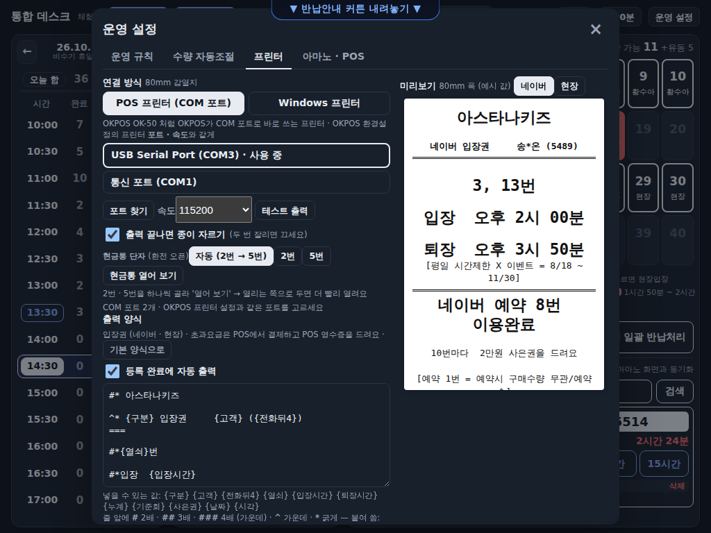
- 운영 설정 → 프린터 → 연결 방식
- POS 프린터 (COM 포트): OKPOS OK-50처럼 OKPOS가 COM 포트로 바로 쓰는 프린터 (우리 매장). [포트 찾기] → OKPOS 환경설정의 프린터와 같은 포트 · 속도를 고릅니다 (예: COM3 · 115200).
- Windows 프린터: Windows '프린터 및 스캐너'에 등록된 프린터. [프린터 찾기] → 목록에서 고름. 안 나오면 [인쇄 창으로 출력]으로 시험.
- [테스트 출력] → 종이가 나오고 잘리는지 확인. 버튼 아래에 결과가 나옵니다. 글자가 깨져 나오면 속도를 바꿔 봅니다.
- 출력 끝나면 종이 자르기: 프린터가 이미 스스로 자르면 꺼 주세요 (두 번 잘림).
- 입장권은 등록 완료 때 자동 출력됩니다: 네이버 · 현장 입장권 / 고객명(가운데 가림, 현장은 빈칸) · 열쇠 · 입장시간 · 퇴장시간 / 네이버 손님은 이용완료 누계, 현장 손님은 네이버 예약 안내 / 이용수칙.
- 양식 글은 이 화면에서 고칠 수 있고 오른쪽 미리보기(네이버 · 현장)로 확인합니다. [기본 양식으로]로 되돌립니다.
| 줄 앞에 쓰는 표시 | 뜻 |
|---|
| # · ## · ### | 글자 2배 · 3배 · 4배 (가운데) |
| ^ · * | 가운데 · 굵게. 붙여 씀: #* 2배 굵게, ^* 가운데 굵게 |
| --- · === | 구분선 · 이중선 (한 줄 42칸) |
| [네이버] · [현장] · [사은권] | 그 줄을 네이버 예약 · 현장입장 · 사은권 받는 회차에만 출력 |
| {열쇠} {입장시간} … | 손님마다 바뀌는 값 (화면 아래 목록) |
COM 포트가 목록에 없으면 프린터 USB 선과 전원을 확인하세요. Windows 프린터 방식에서 목록이 비면 Windows 설정 → 프린터 및 스캐너에 그 프린터가 있는지 봅니다.
10. 반납안내 커튼
손님에게 열쇠 반납을 안내할 때 화면 전체를 안내 그림으로 덮습니다.
- 화면 맨 위 가운데 초록 ▼ 반납안내 커튼 내려놓기 ▼ 손잡이를 아래로 끌어내립니다 (눌러도 내려옴).
- 치울 때: 아래 초록 ▲ 누르면 사라져요 ▲를 누르면 바로 사라지고, 그림 왼쪽 아래 빨간 별을 누르면 위로 빠르게 걷힙니다.
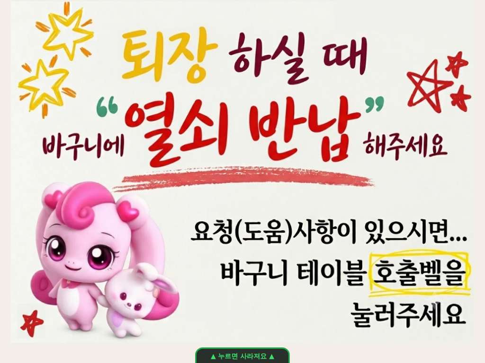
커튼이 내려와 있는 동안에도 뒤에서 네이버 · 아마노 일은 계속됩니다.
11. 문제가 생겼을 때
| 보이는 것 | 할 일 |
|---|
| 새로고침 옆 빨간 글 "네이버에 로그인해 주세요" | 운영 설정 → 아마노 · POS → 네이버 화면 보기 → 로그인('로그인 상태 유지' 체크) → 새로고침. |
| "예약현황이 '일간'이 아님" | 네이버 화면 보기 → 예약현황 왼쪽 위를 일간으로 → 새로고침. |
| "카드를 못 읽은 칸: 14:00 확정" | 그 시간 줄을 한 번 더 누릅니다. 계속되면 운영 설정 → 네이버 화면 저장 (바탕화면 '아스타나키즈-진단' 폴더 파일을 관리자에게). |
| 빨간 글 "⚠ 네이버 이용완료 실패" · 카드에 "네이버 이용완료 대기" | 2분마다 자동으로 다시 합니다. 오래 남아 있으면 네이버 화면에서 그 손님을 직접 이용완료. |
| 맨 아래 빨간 "⚠ 할인 등록 실패" | [다시]. 계속 안 되면 [아마노 화면 보기]로 로그인 상태 확인 → [다시]. 아마노에서 직접 넣었으면 [지우기] (7장). |
| "아마노 로그인이 풀렸어요" | [아마노 화면 보기] → 로그인. 보통은 자동으로 다시 로그인합니다. |
| 입장권 출력 실패 | 운영 설정 → 프린터 → 포트 · 속도 확인 → 테스트 출력 (9장). |
| 결제하기를 눌러도 POS가 안 나옴 | "POS 창을 찾지 못함"이면 OKPOS가 켜져 있는지 확인 · 운영 설정의 POS 창 제목 확인. "펼치지 못했어요"면 작업표시줄의 OKPOS 아이콘을 직접 누릅니다. |
| POS를 최소화해도 데스크가 안 올라옴 | 작업표시줄의 입장 데스크 아이콘을 누릅니다. 결제 완료 단계로 그대로 이어집니다. |
| 화면이 멈춘 것 같음 | 입장 데스크 창을 닫고 다시 켭니다. 열쇠 · 입장 기록은 그대로 남습니다. |
운영 규칙 (운영 설정 → 운영 규칙)
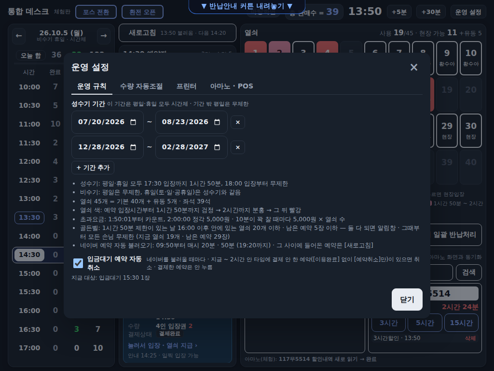
- 성수기: 평일 · 휴일 모두 17:30 입장까지 1시간 50분, 18:00 입장부터 무제한. 비수기: 평일 무제한, 휴일은 성수기와 같음.
- 성수기 기간은 한 줄에 시작 ~ 끝, [+ 기간 추가]로 늘리고 × 로 지웁니다.
네이버 판매 수량 자동조절 (운영 설정 → 수량 자동조절, 관리자)
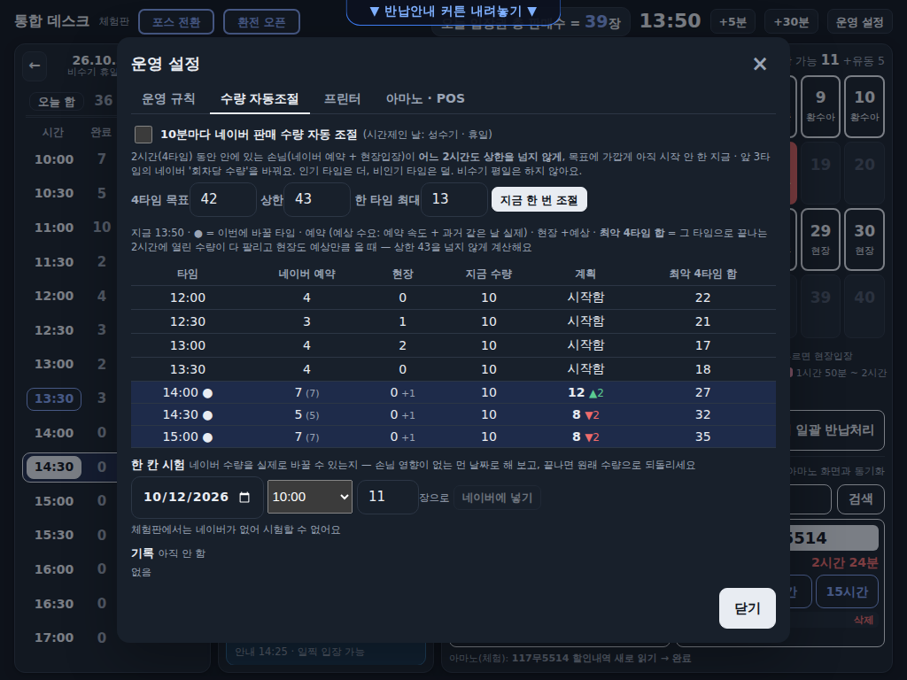
- 성수기(평일 · 휴일) · 비수기 주말 · 공휴일에만 합니다 (비수기 평일은 안 함). 10분마다 아직 시작 안 한 지금 · 앞 3타임의 네이버 '회차당 수량'을 바꿉니다.
- 어느 시각에도 안에 있는 손님이 상한 43을 넘지 않게 셉니다 (목표 42, 한 타임 최대 13장). 열쇠(좌석) 기준: 지금 안에 있는 손님은 열쇠 반납 시각까지만 셉니다 — 일찍 나가 열쇠를 반납하면 그 자리는 바로 앞 타임에 다시 팝니다. 그래서 나갈 때 열쇠 반납을 바로 눌러 주세요.
- 아직 안 온 예약은 늦게라도 올 수 있어 끝 시간까지 자리를 잡아 둡니다. 앞으로 올 타임은 예상으로: 같은 요일(월~금 각각 · 토 · 일 · 공휴일) 지난주 70% · 최근 3주 평균 10% · 추세 10% · 오늘 예약 속도 10%.
- 고객에게 보이는 잔여는 10장을 넘지 않게 합니다 (안내 '최대 10팀'과 맞게). 목표가 13이어도 처음엔 10장만 열고, 예약이 늘수록 천천히(예약 2명 → 잔여 9 …) 13에 가까워집니다.
- 비인기 타임(예상이 열린 수량보다 적음)은 예상만큼만 팔린다고 보고, 남는 열쇠를 인기 타임에 더 엽니다. 인기 타임은 열린 수량이 다 팔린다고 봅니다. 과거 같은 요일 기록이 없으면 지금 예약 수준 90% · 오늘 추세 10%로 예상합니다.
- [10분마다 … 자동 조절]을 체크하면 켜집니다. [지금 한 번 조절]로 바로 해 볼 수 있고, 표의 그때 안(그 타임 시작 때 안에 있을 손님)이 상한 안인지 봅니다. 기록에 바꾼 내용 · 실패(빨강)가 남고, 3번 연속 실패하면 30분 쉽니다.
- 한 칸 시험: 날짜 · 타임 · 수량을 골라 [네이버에 넣기] → 네이버 예약현황에서 그 칸 수량이 바뀌었는지 확인 (손님 영향이 없는 먼 날짜로, 끝나면 원래 수량으로 되돌림). 영업 전에 [지금 한 번 조절]을 누르면 그날 첫 3타임을 조절합니다.